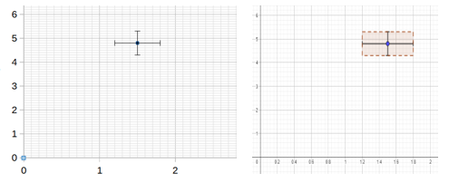

Grafici
1. Grafici: indicazioni generali
2. I grafici col foglio elettronico
1. Grafici: indicazioni generali
Quando si studia un fenomeno, spesso quello che si cerca è la relazione tra due (o più) grandezze, possibilmente espressa con una formula che leghi le variabili in esame. Per esempio, potremmo cercare la relazione tra il prezzo di un bene ed il tempo, oppure tra il prezzo del petrolio e il costo delle auto.
Per determinare la relazione è di grande aiuto rappresentare i dati in un grafico, perché ad ogni tipo di relazione corrisponde una diversa curva su cui i dati si dispongono. Una volta trovata una relazione che descrive con sufficiente precisione il legame tra le grandezze che ci interessano, questa può essere usata anche per calcolare il possibile risultato di misure senza bisogno di eseguirle realmente (o, se vogliamo mettere alla prova l'effettiva validità della relazione, prima di eseguirle).
Se stiamo cercando una relazione tra due grandezze, avremo raccolto delle coppie di dati. Come passiamo dai dati a un grafico?
La geometria analitica stabilisce una corrispondenza tra elementi geometrici ed elementi algebrici. In particolare, possiamo partire dalla corrispondenza tra punti del piano e coppie di numeri reali e rappresentare le curve geometriche piane attraverso equazioni. Si tracciano sul piano due rette perpendicolari (assi cartesiani), e su ciascuna di esse si scelgono un'origine (corrispondente alla posizione del numero zero), un'unità di misura e un verso (indicato con una freccia, indica la direzione crescente sull'asse). Spesso, ma non necessariamente, gli zeri di entrambi gli assi coincidono con il punto di intersezione di questi. Dato un punto del piano, questo può essere identificato con una coppia di numeri reali nel modo seguente: si proietta il punto su entrambi gli assi (detti asse delle ascisse e asse delle ordinate) tracciando la perpendicolare all'asse passante per il punto, e dove questa perpendicolare interseca l'asse si legge una delle due coordinate del punto. La coppia di numeri che si ottiene così rappresenta il punto.
Sfruttando questa corrispondenza possiamo rappresentare le coppie numeriche di dati raccolti con un punto nel piano cartesiano, identificando le misure con le coordinate del punto. È necessario avere qualche accorgimento e, in sintesi:
- Si identifica, per ciascuna delle due grandezze, il valore massimo da rappresentare, e in base allo spazio a disposizione si sceglie una unità di misura che permetta di fare rientrare tale valore nel disegno. Se sono presenti anche valori negativi bisogna tenere conto anche del valore minimo.
- Si segnano su ciascun asse alcuni valori di riferimento, a intervalli regolari.
- Si scrive, su ciascun asse, vicino alla freccia che indica il verso, la grandezza rappresentata e, tra parentesi, l'unità di misura usata.
- Si rappresentano con dei punti le coppie di valori corrispondenti ai valori più probabili.
- Eventualmente, per ogni grandezza si valuta a quanto corrisponde l'incertezza delle misure secondo l'unità di misura scelta e si riporta tale incertezza in più e in meno attorno al punto con una croce.

La croce rappresenta in realtà un rettangolo di punti compatibili con la misura. Se l'incertezza nel grafico corrisponde a meno di un millimetro si tralascia. Per esempio, per rappresentare un punto di coordinate (1,5±0,3;4,8±0,5) rappresentiamo una riga orizzontale da 1,2 a 1,8 e una riga verticale da 4,3 a 5,3, centrate sul punto (1,5; 4,8), come in figura.2. I grafici col foglio elettronico
3. I grafici con Python